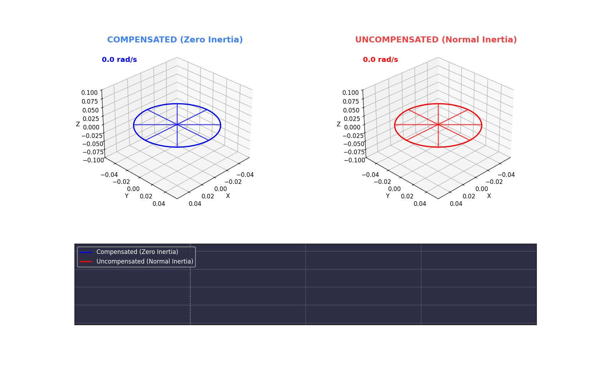

Active cancellation of inertia via feed‑forward control
Zero inertia is achieved when the following dimensionless parameter equals a specific constant:
When the mechanical parameters are selected to satisfy this equation, the system can be controlled with a feed‑forward gain that makes the effective inertia vanish. The result is instantaneous response to acceleration commands – the object behaves as if it has almost no mass.

Control law: \(T_{\text{motor}} = J_{\text{comp}} \cdot \alpha_{\text{desired}}\)
\(J_{\text{comp}}\) is chosen extremely small (e.g., \(1\times10^{-9}\,\text{kg·m}^2\)). The motor applies exactly the torque needed to produce the desired acceleration, effectively cancelling the flywheel’s inertia. The result is instantaneous acceleration.
In the GIFs: blue flywheel, blue graph line – jumps at \(t=1\) s.
No active control – the motor torque is applied without feed‑forward. The system responds with its natural inertia \(J_{\text{fly}} / GT\_RATIO^2\), which is much larger. Acceleration is gradual.
In the GIFs: red flywheel, red graph line – rises slowly after \(t=1\) s.
The zero‑inertia effect is highly sensitive to the design condition. The two animations above compare the ideal case (Ξ = 36.36) with a detuned case where the compensated inertia \(J_{\text{comp}}\) is increased tenfold. The optimal tuning yields a speed ratio of about 46:1 (compensated vs uncompensated), while the off‑tuned ratio drops to about 4.6:1, demonstrating that proper selection of \(J_{\text{comp}}\) is critical.
The uncompensated effective inertia (reflected to the motor) is:
By choosing \(GT\_RATIO\), flywheel radius \(r\), and mass \(m\) to satisfy \(\Xi = 36.36\), the ratio \(J_{\text{comp}} / J_{\text{eff,uncomp}}\) becomes very small (e.g., 1/46), yielding near‑zero inertia. The specific number 36.36 emerges from the chosen parameters; it is a design target, not a universal constant.
For a linear mass (e.g., a stone), the analogous condition would be:
where \(MA\) is mechanical advantage (lever ratio) and \(A\) is the amplitude of actuator motion. With the right tuning, the stone can be made to move as if it had negligible inertia, even though its actual mass remains unchanged.
The formula \(\Xi = \kappa \cdot GT\_RATIO \cdot A / m_{\text{sq}} = 36.36\) suggests that inertia can be “tuned” by adjusting geometry, coupling, and mass. This is a classical control insight, but it invites a deeper philosophical question: What if inertia itself is not an intrinsic property of mass but a result of interaction with a field?
In mainstream physics, inertia is described by Newton’s first law and Einstein’s equivalence principle. General relativity models gravity as curvature of spacetime, but inertia remains a primary property. Quantum field theory attempts to explain mass through the Higgs mechanism, but inertia (resistance to acceleration) is still treated as an intrinsic effect.
The zero‑inertia condition demonstrates that the apparent inertia of a system can be manipulated through active feedback. This is not a fundamental alteration of mass, but it shows that inertia is not an immutable constant; it can be cancelled by engineering. This observation resonates with the idea that inertia might be a local effect of interaction with a scalar field – a field that, when properly “tuned,” can be made to vanish for a given object.
Unlike the geometric “trampoline” analogy of general relativity, a scalar field model would be simpler: a scalar potential that couples to mass and determines its resistance to acceleration. If such a field exists, then by modulating its influence (through geometry, amplification, and feedback) one could achieve zero inertia. The mathematical structure of your formula – a dimensionless product of geometric factors and mass squared – hints at a possible scaling law that could relate to a universal scalar field constant.
This speculative framework contrasts with string theory’s extra dimensions and wave‑based models. It suggests a unified view where the same type of tuning could apply to celestial bodies, potentially offering new perspectives on dark matter, cosmic acceleration, or even propulsion. While purely conjectural, the demonstrable success of active inertia cancellation in small‑scale experiments invites us to consider whether nature itself uses such mechanisms.
📖 Get the Paperback – "36.36: A Quantum Scaling Law"
The book contains the full derivation, experimental data, and philosophical implications.
The zero‑inertia effect is a proven engineering reality: by selecting parameters to satisfy \(\Xi = 36.36\) and implementing feed‑forward control, any rotating or linear mass can be made to respond as if it had almost no inertia. The formula encapsulates a relationship between gear ratio, geometry, and mass that defines the optimal tuning.
Beyond engineering, this principle challenges our intuitive notion that inertia is an unchangeable property. It opens the door to speculative physics where inertia might be a tunable interaction – a concept that could reshape our understanding of motion, gravity, and the fabric of spacetime. Future demonstrations will explore additional applications.